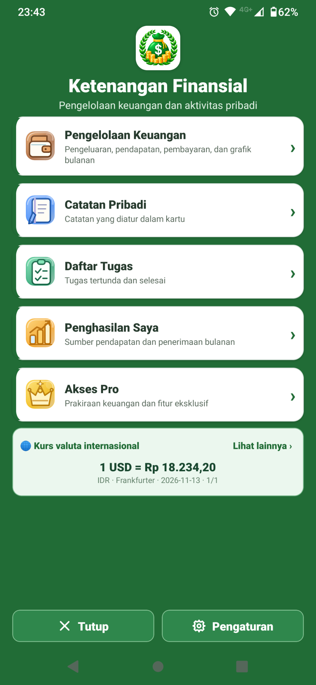
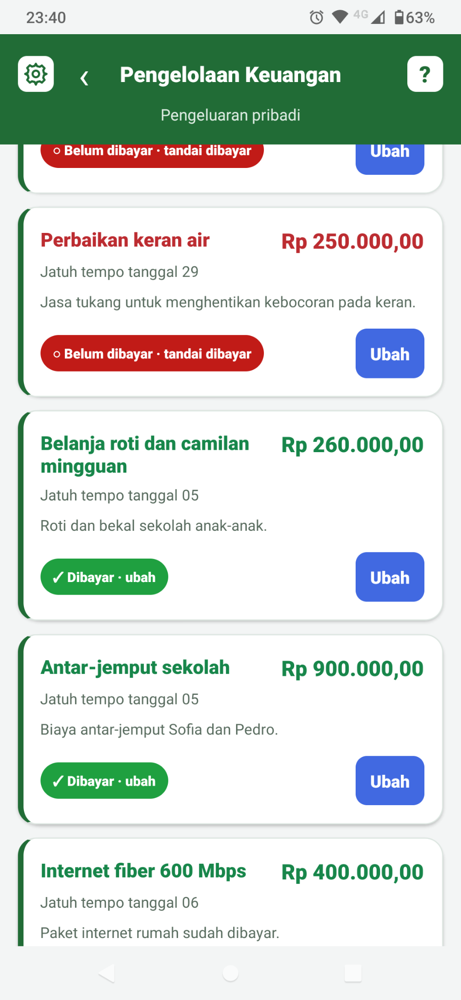

Kelola keuangan
Atur pengeluaran, gaji, pendapatan tambahan, tagihan, langganan, dan entri berulang.
Ketenangan Finansial · Pengelolaan keuangan dan aktivitas pribadi
Ketenangan Finansial, sebelumnya dikenal sebagai MyMoney, MeuDinheiro, dan MiDinero, menggabungkan keuangan pribadi, tugas, catatan, dan pengingat dalam satu aplikasi Android.
Ketenangan Finansial adalah aplikasi Android untuk mengelola pengeluaran, pendapatan, tugas, catatan pribadi, dan pengingat.
Pengelolaan keuangan dan aktivitas pribadi
Atur pengeluaran, gaji, pendapatan tambahan, tagihan, langganan, dan entri berulang.
Buat tugas, pengingat, dan catatan pribadi dalam teks atau suara.
Gunakan grafik, kalender keuangan, dan indikator penting setiap bulan.
Amankan data dengan PIN 8–16 digit dan penyimpanan lokal terenkripsi.
Tampilan nyata ini membantu memperlihatkan antarmuka Bahasa Indonesia dengan cara yang rapi dan informatif.


Tonton video resmi berbahasa Indonesia atau buka playlist lengkap dengan semua bahasa yang tersedia.
Fitur utama untuk keuangan, tugas, dan catatan bekerja secara lokal. Beberapa layanan eksternal memerlukan koneksi internet.
Ya. Aplikasi ini telah berganti nama namun tetap menggunakan paket Android yang sama: com.anspro.mymoney.app.
Di bagian footer ada tautan ke versi lengkap dalam bahasa Inggris.
Ketenangan Finansial adalah aplikasi Android untuk pengelolaan keuangan pribadi dan organisasi aktivitas harian. Paket: com.anspro.mymoney.app · Kontak: moneyproapp@gmail.com
Ketenangan Finansial tersedia dalam bahasa Portugis, Inggris, Spanyol, Prancis, Jerman, Italia, dan Indonesia.